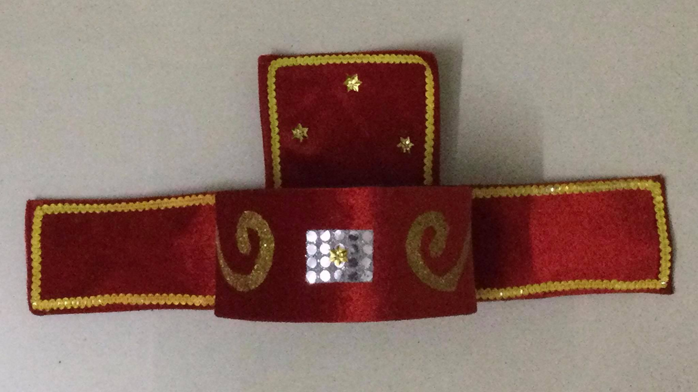
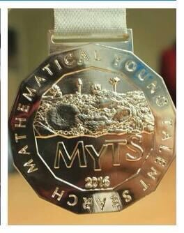
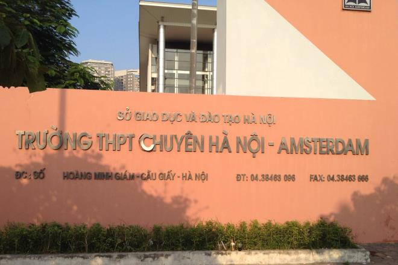

Tôi ngày bé
Trước khi đặt chân tới cánh cổng trường học
Tôi thấy mình may mắn vì sinh ra trong gia đình có đủ điều kiện cho tôi ăn học, thoả sức với đam mê của mình. Hồi còn bé, tôi rất nghịch, bày đủ trò để chơi. Chân tay tôi lúc nào cũng có thứ đồ chơi mà tôi thích. Mà khi không còn thích chơi nữa thì tôi lại phá. Cũng không biết đã có bao nhiêu món đồ chơi đã không còn nguyên vẹn khi vào tay tôi rồi. Những lần tôi chờ mẹ đón muộn thì khi về quần áo tôi cũng ướt như vừa tắm vì mải chơi đủ các trò ở trường mầm non. Nghịch là thế nhưng về vấn đề học tập tôi đã được rèn từ bé. Ngay từ nhỏ bố đã đặt rất nhiều kì vọng ở tôi. Vì mẹ tôi là một giáo viên nên từ khi còn học mầm non, tôi đã được chơi với những con số, giải những bài toán cơ bản để có một bước đệm tốt cho bậc tiểu học. Thời gian cứ trôi qua như thế đó...
Những thành công nhỏ của tôi
Và... tôi đã không phụ sự kì vọng của bố. Thành tích học tập của tôi khi bước vào thế giới đầy tri thức khá tốt, nếu không muốn nói là nhiều bạn học đều ngưỡng mộ tôi. Danh hiệu học sinh giỏi thì đương nhiên năm nào tôi cũng có và còn thêm nữa là những giấy khen của những cuộc thi dành cho học sinh giỏi.
Năm lớp 4, tôi được mọi người nhìn với những ánh mắt đấy ngưỡng mộ, từ thầy cô, bạn bè của cả trong và ngoài trường, thậm chí cho tới các bậc phụ huynh. Sau khi có đặt được giải 'Trạng Nguyên nhỏ tuổi' thì 'chút danh tiếng bé nhỏ' của tôi càng 'vang xa' hơn.
Và rồi để đến năm lớp 5, quá tự tin vào bản thân, tôi đánh mất chính mình, lười học, ham chơi, quậy phá, thành tích trong lớp của tôi vẫn giữ vững cho tới khi... tôi 'thất bại' ở chính môn học yêu thích của mình - Toán. Tôi đã không đạt được thành tích gì trong cuộc thi năm đó, sự trượt dốc thậm tệ này khiến tôi lần đầu tiên rơi lệ vì học tập. Tôi mãi mãi không thể quên được ngày hôm đó, tôi đã khóc, khóc như chưa bao giờ được khóc. Tuy nhiên, sau đó tôi đã 'gỡ lại' tất cả bằng tấm huy chương bạc trong cuộc thi MYTS - cuộc thi do Hội Toán học Việt Nam tổ chức.
Mặc dù nó không còn sáng loáng như lúc đầu tiên tôi được cầm nhưng nó là ánh sáng tìm lại bản thân sau lần 'thất bại' trước đó của tôi. Và tôi tự hào về chính mình khi đó.
Từng bước đi tiếp
Đương nhiên với nhiều những thành tích như vậy thì tôi không phải lo việc nhập học vào cấp 2. Thậm chí với tấm huy chương bạc tôi còn được tuyển thẳng vào Trường Amsterdam để học tiếp bậc THCS. Thế nhưng bố mẹ lại lựa chọn cho tôi một ngôi trường 'nhẹ nhàng' hơn. Tuy cũng là 'ngôi trường điểm' nhưng so với Amsterdam thì tôi vẫn thấy điều gì đó luyến tiếc, tôi đã cố gắng đến vậy cơ mà? Nhưng rồi tôi cũng chấp nhận, tôi đã từ bỏ ước mơ dễ dàng vậy đấy...
Nguyễn Thảo Linh
Học sinh cấp 3
Học tại: Fschool (Hoà Lạc)
Tôi đam mê tin học, thích khám phá công nghệ.
Những lúc rảnh rỗi là thời gian tôi dành cho sở thích thể thao của mình, cùng bạn bè đi chơi...
Cảm ơn đã dành ít phút để đọc. Chúc bạn một ngày tốt lành!